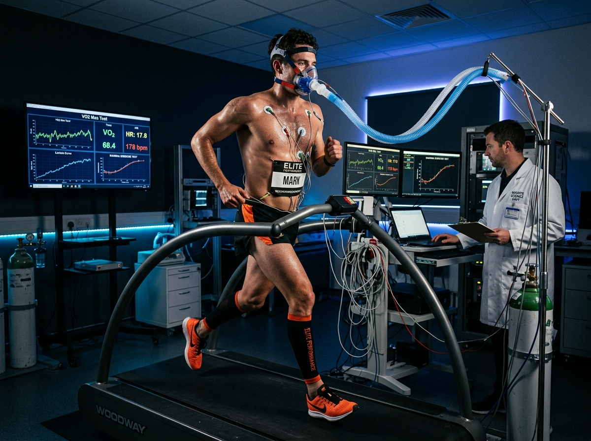
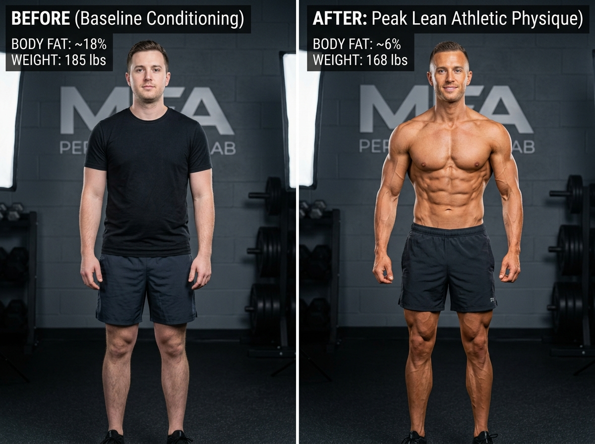
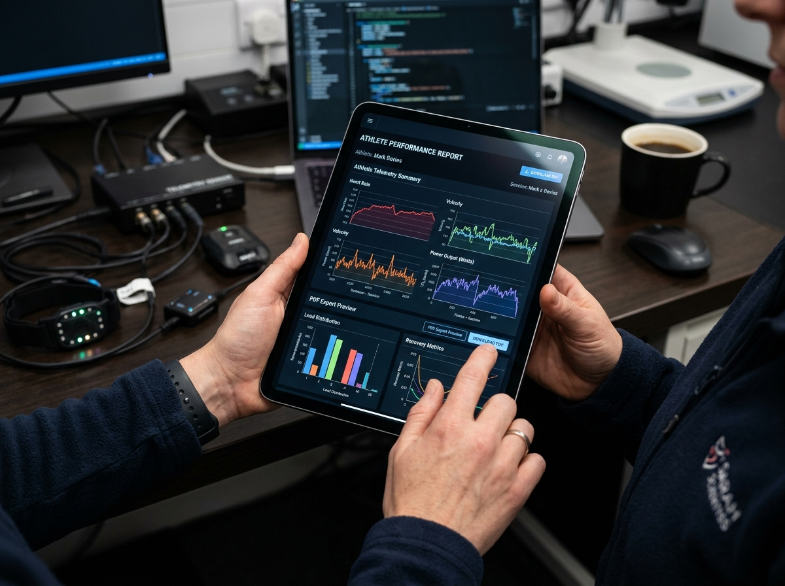

Performance Analytics & Mathematical Precision
Eliminate cognitive bias from athletic programming. Discover your true aerobic ceiling, acute versus chronic workload balance, and supercompensation windows.
Interactive Chart Playground
Switch between biometric metrics and filter across multiple historical time horizons.
Clinical Biomarkers Monitored
Every parameter monitored is normalized against individual baseline physiological models.
VO2 Max Capacity
Milliliters of oxygen utilized per kilogram of body weight per minute, indicating systemic cardiorespiratory fitness.
Acute Training Load (ATL)
Short-term 7-day fatigue accumulation weighted exponentially to track immediate muscular and autonomic exhaustion.
Chronic Training Load (CTL)
Historical 42-day fitness foundation representing mitochondrial density, aerobic capillary beds, and structural durability.
Training Stress Balance (TSB)
CTL minus ATL reveals your exact freshness index. A positive TSB (+10 to +25) indicates optimal competition tapering.
Normalized Power & Pace
Fourth-power algorithm estimates the true physiological cost of variable pacing over hilly courses and surging competition packs.
Aerobic Decoupling (Pw:HR)
Monitors heart rate upward drift relative to constant mechanical power output; below 5% confirms bulletproof aerobic endurance.

Personal Record & Goal Attainment
Real-time predictive timelines based on current acute adaptation velocity.
Baseline Telemetry vs. 12-Week Supercompensation
Witness the transformative physiological shifts achieved through systemic bio-periodization.

Autonomous Biometric Recommendations
Real-time machine heuristics alerting you before overtraining sets in.
Overtraining Early Warning
3-day consecutive HRV rMSSD drop accompanied by elevated resting heart rate indicates parasympathetic exhaustion. Volume reduction recommended.
Optimal Supercompensation
Your 48-hour recovery score rebound reached 98%. Today represents the optimal metabolic window for high-load anaerobic threshold stimuli.
Nutritional Deficit Detection
Carbohydrate intake over the last 48 hours is 18% below expenditure demand. Increase pre-workout maltodextrin/cluster dextrin to protect liver glycogen.
Data Portability & Clinical Audit Reports
Export certified telemetry anytime. Works seamlessly with spreadsheets, sports doctors, and printers.
Export Without Friction
PulseForge believes your health data belongs entirely to you. Download complete raw time-series CSV datasets, generate high-resolution PDF performance audits, or print clinical physical records.

Client Access Control & Coach Roster Governance
Collaborate with your coaching team without sacrificing sensitive health confidentiality.
Clinic Admin Role
Full enterprise governance, staff access grants, billing management, and global audit compliance.
GOVERNANCE TIERCoach Role
Supervise assigned athlete rosters, program workouts, adjust diet plans, and toggle Edit vs View access.
ROSTER MANAGEMENTClient / Athlete Role
Access personal biometric dashboards, log workouts & meals, review readiness, and view assigned coach guidance.
ATHLETE PRIVACYPerformance Plans for Every Level
Choose your tier. Upgrade or pause anytime with guaranteed zero lock-in.
Starter Athlete
For dedicated solo athletes tracking workouts, macros, and personal sleep architecture.
- Unlimited Workout & Nutrition Logging
- Automated HRV & Readiness Scoring
- 30-Day Historical Telemetry Window
- Standard CSV Export Format
Pro Athlete
For competitive athletes, triathletes, and CrossFitters demanding predictive load heuristics.
- Everything in Starter, plus:
- Acute & Chronic Load (ATL / CTL / TSB)
- Unlimited Historical Biometric Retention
- Certified Clinical PDF Audit Reports
- Dedicated Coach Linking Access
Clinic & Coach
For coaching teams, performance gyms, and sports medicine clinics supervising rosters.
- Full Client Access Control Roster
- Granular Edit vs View-Only Permissions
- Multi-Client Team Telemetry Overlays
- Batch CSV & PDF Team Export Tools
- Priority Sports Scientist Support
Granular Plan Comparison Matrix
Every single capability outlined with transparent clarity.
| Capability / Feature | Starter | Pro Athlete | Clinic & Coach |
|---|---|---|---|
| Workout & Exercise Logging | Unlimited | Unlimited | Unlimited |
| Metabolic Macro & Hydration Engine | ✓ | ✓ | ✓ |
| Circadian Sleep Staging (REM / SWS) | ✓ | ✓ | ✓ |
| Acute & Chronic Load (ATL / CTL / TSB) | — | ✓ (Included) | ✓ (Included) |
| One-Click CSV Export Download | ✓ | ✓ | ✓ |
| Certified PDF Clinical Audit Reports | — | ✓ | ✓ |
| Coach & Client Access Control System | — | Single Coach Sync | Full Client Roster (Up to 50) |
Analytics & Licensing Questions
Common questions answered regarding coach client limits and billing options.
Yes. You can switch between billing periods at any time from your settings tab. Switching to yearly applies an automatic 20% discount credited pro-rata.
The standard Clinic plan includes up to 50 active athletes with individual permission management (Edit vs View-Only). Custom enterprise tiers are available for collegiate athletic programs.
Never. Your CSV datasets contain all logged records with zero caps or truncations. PDF reports are clean, high-resolution vector documents with certified biometric headers.
Scale Your Performance With PulseForge
Log in to the dashboard, test live calculations, and experience award-winning sports telemetry today.